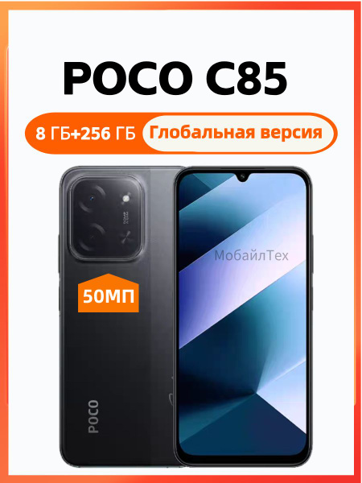

POCO C85 8/256 ГБ
Лучший баланс по деньгам: 8 ГБ ОЗУ, огромный аккумулятор и карта памяти до 1 ТБ. Экран простой — IPS, 720p.
| Процессор | MediaTek Helio G81-Ultra, 8 ядер |
| Память | 8 ГБ ОЗУ / 256 ГБ |
| Экран | IPS LCD, 6,9″, 1600×720, 120 Гц |
| Камера | 50 Мп |
| Аккумулятор | 6000 мА·ч |
| SIM | 2 SIM (Nano) |
| Карта памяти | microSD до 1 ТБ |
| NFC | есть |
Плюсы
- 8 ГБ ОЗУ — вкладки не выгружаются
- 6000 мА·ч — два дня без розетки
- microSD до 1 ТБ
На что смотреть
- Разрешение экрана всего 1600×720
- IPS, а не AMOLED